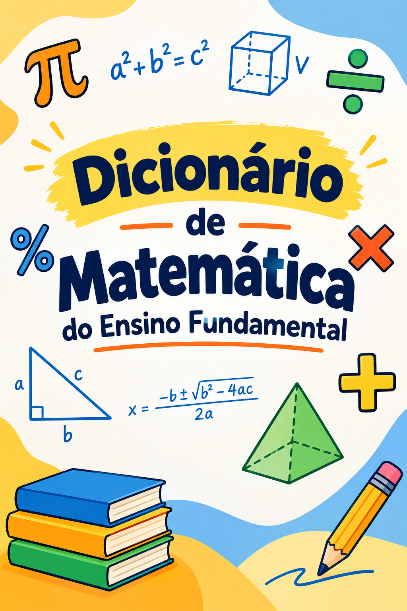

📖
Livro interativo
Folheie as páginas com animação, use os controles ou as setas do teclado e navegue pelo conteúdo.
Uma biblioteca digital criada a partir da pesquisa, investigação e produção dos estudantes do 6º ao 9º ano da EMEFTI Martinho Motta da Silveira.

Leia as páginas, procure um termo pelo nome ou navegue pelo alfabeto. A versão digital foi organizada para leitura em computador, tablet e celular.
Folheie as páginas com animação, use os controles ou as setas do teclado e navegue pelo conteúdo.
Digite uma palavra matemática e veja o significado encontrado, com indicação da página correspondente.
Interface responsiva, com gestos de toque e uma experiência adaptada para dispositivos móveis.
O projeto nasceu no Clube de Matemática, a partir da inspiração em Poesia Matemática, de Millôr Fernandes. Os estudantes participaram da construção do vocabulário matemático e o resultado foi organizado em um dicionário coletivo.
O processo envolveu pesquisa no livro A Conquista da Matemática, investigação dos significados e envio das produções pelo Canva, seguido da organização e edição do material pelo professor.
Buscar palavras relacionadas à Matemática nos livros utilizados pelos estudantes.
Pesquisar e compreender os significados dos termos selecionados.
Organizar as contribuições dos estudantes e encaminhá-las pelo Canva.
Revisar, organizar e transformar o material coletivo em um dicionário.
Comece a digitar. Os resultados mostram o termo, uma prévia do significado e a página em que ele aparece.
Uma produção pedagógica do Clube de Matemática da EMEFTI Martinho Motta da Silveira.
Marabá — Pará
Escola de tempo integral
Idealização e organização: Professor Thyago dos Santos Gomes.